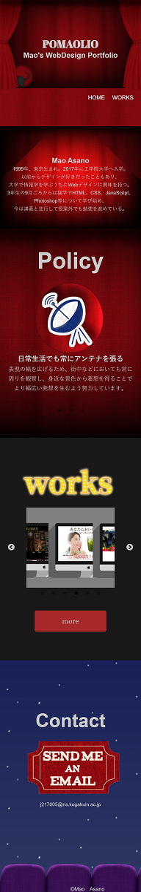
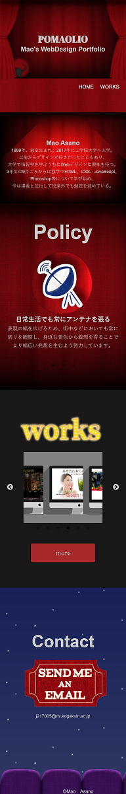

ポートフォリオサイト
制作時期：10月～12月
制作期間：約２か月(他の作品作りと並行して作成)
ターゲット
採用担当者の皆様
こだわり
・「劇場・映画館」というモチーフを設け、遊び心をもって自分らしさを表現
・「PAGE TOP」ボタンに遊び心を
→「PAGE TOP」ボタンをクリックすると、画面がモノクロに変化しテープを巻き戻しながらページの上へと戻ります。
・楽しさと見やすさの両立 →なるべく楽しい画面にするよう心がけつつも、サイトとしての使いやすさが損なわれないよう冗長すぎる演出はなるべく削り、見やすさにもこだわりました。
制作範囲
イラスト、デザイン、コーディング
使用ツール
HTML,CSS,JavaScript,
JQuery,Photoshop,ibisPaint X